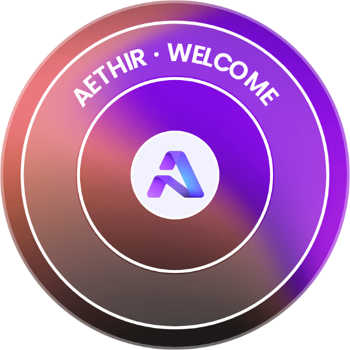

Aphone - Aethir
Partnership Announcement

Aethir foi fundada em 2021 por Mark R., Daniel Wang, Richard Xu Fenglei. Até agora, Aethir completou 1 rodada de arrecadação de fundos, com um valor acumulado de 9.00M dólares americanos，e alcançando uma avaliação de $150.00M. Seu financiamento mais recente foi uma rodada Pre-Series A em 26/07/2023, que rendeu $9.00M em capital de risco.
Conecte-se


O que fazemos
Na Aethir, construímos infraestrutura de computação distribuída baseada em GPU para casos de uso corporativo dinâmico.
Estamos apoiando projetos que usam o blockchain para resolver
problemas do mundo real. A Aethir está expandindo significativamente
o mercado endereçável de jogos e outros conteúdos de streaming nos
mercados de maior crescimento do mundo (mas com restrições de
hardware). Todos ganham com a expansão da Aethir – jogadores,
editores e operadores de nós de renderização distribuídos
globalmente.